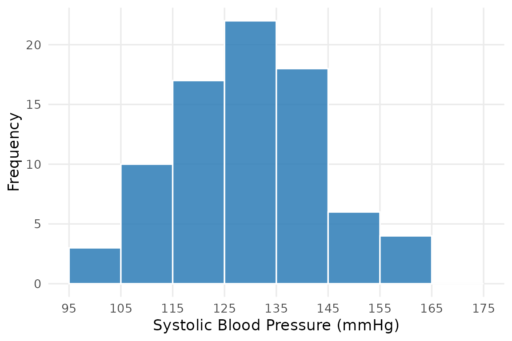
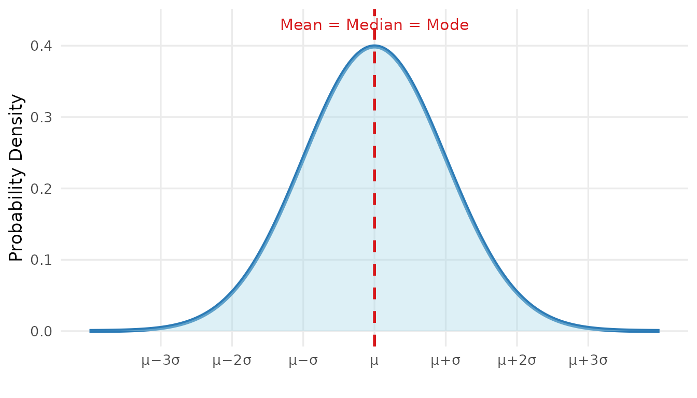
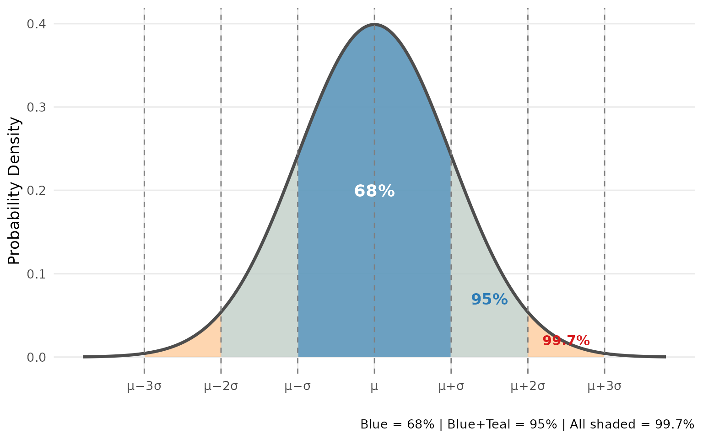
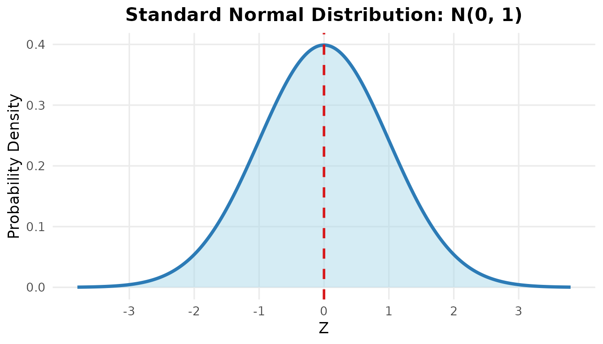
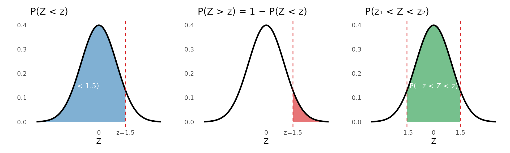

| Blood Type | Frequency (f) | Relative Frequency (f/n) | Percentage |
|---|---|---|---|
| A | 76 | 76/200 = 0.38 | 38% |
| B | 54 | 54/200 = 0.27 | 27% |
| AB | 30 | 30/200 = 0.15 | 15% |
| O | 40 | 40/200 = 0.20 | 20% |
| Total | 200 | 200/200 = 1.00 | 100% |
Chapter 3 | 208141 Introduction to Biostatistics
Why Does This Matter?
When we collect data — patient ages, blood pressure readings, test results — we rarely get the same value twice. Outcomes vary, and that variation follows patterns we can describe mathematically.
Understanding how data is distributed allows us to answer questions like:
In this chapter, we start from frequency distributions (what we observed in a sample), move to probability and random variables (what we expect in the population), and finish with the normal distribution — the most important probability distribution in all of biostatistics.
A frequency distribution is a systematic way of organizing raw data into a table that shows how often each value (or range of values) occurs.
It answers the simple question: “How many times does each value appear?”
For categorical variables, we simply count how many observations fall into each category.
Example
Blood types of 200 patients admitted to a hospital last month:
| Blood Type | Frequency (f) | Relative Frequency (f/n) | Percentage |
|---|---|---|---|
| A | 76 | 76/200 = 0.38 | 38% |
| B | 54 | 54/200 = 0.27 | 27% |
| AB | 30 | 30/200 = 0.15 | 15% |
| O | 40 | 40/200 = 0.20 | 20% |
| Total | 200 | 200/200 = 1.00 | 100% |
Relative frequency = \(\dfrac{f}{n}\), where \(f\) is the count for that category and \(n\) is the total number of observations.
For continuous variables, we group values into class intervals (also called bins) and count how many observations fall in each interval.
Steps to construct a frequency distribution table:
Example
Systolic blood pressure (mmHg) of 80 patients:
| Class Interval (mmHg) | Frequency (f) | Relative Frequency | Cumulative Frequency |
|---|---|---|---|
| 95-104 | 2 | 0.025 | 2 |
| 105-114 | 9 | 0.112 | 11 |
| 115-124 | 17 | 0.212 | 28 |
| 125-134 | 22 | 0.275 | 50 |
| 135-144 | 18 | 0.225 | 68 |
| 145-154 | 8 | 0.100 | 76 |
| 155-164 | 4 | 0.050 | 80 |
| 165-174 | 0 | 0.000 | 80 |
Cumulative frequency tells us how many observations fall at or below the upper boundary of each class — useful for answering questions like “What proportion of patients have SBP below 135 mmHg?” (read the cumulative frequency of the class that ends at 134, then divide by 80).
The following are the ages (in years) of 20 patients:
\[45, 62, 38, 55, 71, 48, 60, 33, 52, 67,\] \[41, 58, 74, 50, 65, 44, 57, 69, 36, 53\]
Construct a frequency distribution table using 5 class intervals.
Solution
Step 1 — Find the range: \[\text{Range} = 74 - 33 = 41\]
Step 2 — Calculate class width: \[\text{Class width} = \frac{41}{5} = 8.2 \rightarrow \text{round up to } 9\]
Step 3 — Construct the table (starting from the minimum, 33). Each class is 9 years wide, so the classes are 33–41, 42–50, 51–59, 60–68 and 69–77. Every value belongs to exactly one class — for example, age 60 is counted in 60–68, not in 51–59.
| Age Group (years) | Frequency (f) | Relative Frequency | Percentage | Cumulative Frequency |
|---|---|---|---|---|
| 33-41 | 4 | 0.20 | 20% | 4 |
| 42-50 | 4 | 0.20 | 20% | 8 |
| 51-59 | 5 | 0.25 | 25% | 13 |
| 60-68 | 4 | 0.20 | 20% | 17 |
| 69-77 | 3 | 0.15 | 15% | 20 |
Interpretation: The largest group of patients is aged 51–59 years (5 patients, 25%). From the cumulative frequency column, 8 of the 20 patients (40%) are aged 50 years or younger, and 13 patients (65%) are aged 59 years or younger.
A frequency distribution table can be visualized as a histogram, where the height of each bar represents the frequency of that class interval.

The shape of the histogram is important — it tells us about the distribution of the data, which leads us to the next section.
A probability is a number between 0 and 1 that describes how likely an event is:
The relative frequency we calculated above is our link to probability. In the blood-type table, 38% of the 200 patients had blood type A. If we pick one patient at random from this group, the probability that the patient has blood type A is \(P(\text{type A}) = 0.38\).
When we only have a sample, the relative frequency is our best estimate of the probability in the population.
A random variable is a variable whose value depends on chance — we do not know its value until we select an individual and measure it.
Example: “The systolic blood pressure of a randomly selected patient” is a random variable. Before we choose the patient, we cannot say what the value will be, but we can say which values are more likely.
Random variables follow the same classification as data in Chapter 1:
| Random variable | Example | Probabilities are shown as |
|---|---|---|
| Discrete | Number of falls on a ward per month | A bar for each possible count |
| Continuous | Systolic blood pressure | The area under a smooth curve |
A probability distribution lists all possible values of a random variable and how likely each one is.
For a continuous random variable, imagine collecting more and more patients and making the class intervals of the histogram narrower and narrower: the bars smooth out into a curve. The probability that a value falls in a range equals the area under the curve over that range, and the total area is 1 (100%).
The most important of these curves is the normal distribution.
The normal distribution (also called the Gaussian distribution or bell curve) is the most important probability distribution in statistics.
Many biological and clinical measurements naturally follow — or approximately follow — a normal distribution:
Not every clinical measurement is normal. Length of hospital stay, for example, is strongly right-skewed (Chapter 2), so it does not follow a normal distribution.

A normal distribution is completely described by just two parameters:
| Parameter | Symbol | Meaning |
|---|---|---|
| Mean | \(\mu\) | Center of the distribution (peak of the bell) |
| Standard deviation | \(\sigma\) | Width of the bell — larger σ = wider, flatter curve |
Key properties:
One of the most useful facts about the normal distribution is how much of the data falls within 1, 2, or 3 standard deviations of the mean.

The Empirical Rule
| Range | Proportion of data |
|---|---|
| Within 1 SD of the mean: \(\mu \pm \sigma\) | ≈ 68% |
| Within 2 SD of the mean: \(\mu \pm 2\sigma\) | ≈ 95% |
| Within 3 SD of the mean: \(\mu \pm 3\sigma\) | ≈ 99.7% |
This means only about 5% of values fall more than 2 SD from the mean, and only 0.3% fall more than 3 SD away — these are considered unusual or extreme.
More precisely, 95% of values lie within 1.96 SD of the mean. The rounded value 2 is fine for quick estimates; the exact value 1.96 is the one we will use for confidence intervals in Chapter 4.
The systolic blood pressure (SBP) of adults in a community follows a normal distribution with mean = 125 mmHg and SD = 14 mmHg.
(a) Between what two values does the SBP of the middle 95% of adults fall?
(b) What percentage of adults have SBP above 153 mmHg?
Solution
(a) The middle 95% falls within \(\mu \pm 2\sigma\):
\[125 - 2(14) = 97 \text{ mmHg} \quad \text{to} \quad 125 + 2(14) = 153 \text{ mmHg}\]
So 95% of adults have SBP between 97 and 153 mmHg.
(b) SBP = 153 mmHg is exactly \(\mu + 2\sigma\). Since 95% of values fall within 2 SD, the remaining 5% fall outside. By symmetry, 2.5% fall above 153 mmHg and 2.5% fall below 97 mmHg.
Answer: Approximately 2.5% of adults have SBP above 153 mmHg.
Different normal distributions have different means and SDs. To compare values across different distributions, we standardize them using the Z-score:
\[z = \frac{x - \mu}{\sigma}\]
Where:
A positive Z means the value is above the mean; a negative Z means it is below the mean.
When we convert all values to Z-scores, the resulting distribution is called the standard normal distribution, with:
\[\mu = 0 \quad \text{and} \quad \sigma = 1\]
This is written as \(Z \sim N(0, 1)\).

The Z-table (also called the standard normal table) gives us the area to the left of any Z-score — which equals the probability that a randomly selected observation falls below that value.
| 0.00 | 0.01 | 0.02 | 0.03 | 0.04 | 0.05 | 0.06 | 0.07 | 0.08 | 0.09 | |
|---|---|---|---|---|---|---|---|---|---|---|
| 0.0 | 0.5000 | 0.5040 | 0.5080 | 0.5120 | 0.5160 | 0.5199 | 0.5239 | 0.5279 | 0.5319 | 0.5359 |
| 0.1 | 0.5398 | 0.5438 | 0.5478 | 0.5517 | 0.5557 | 0.5596 | 0.5636 | 0.5675 | 0.5714 | 0.5753 |
| 0.2 | 0.5793 | 0.5832 | 0.5871 | 0.5910 | 0.5948 | 0.5987 | 0.6026 | 0.6064 | 0.6103 | 0.6141 |
| 0.3 | 0.6179 | 0.6217 | 0.6255 | 0.6293 | 0.6331 | 0.6368 | 0.6406 | 0.6443 | 0.6480 | 0.6517 |
| 0.4 | 0.6554 | 0.6591 | 0.6628 | 0.6664 | 0.6700 | 0.6736 | 0.6772 | 0.6808 | 0.6844 | 0.6879 |
| 0.5 | 0.6915 | 0.6950 | 0.6985 | 0.7019 | 0.7054 | 0.7088 | 0.7123 | 0.7157 | 0.7190 | 0.7224 |
| 0.6 | 0.7257 | 0.7291 | 0.7324 | 0.7357 | 0.7389 | 0.7422 | 0.7454 | 0.7486 | 0.7517 | 0.7549 |
| 0.7 | 0.7580 | 0.7611 | 0.7642 | 0.7673 | 0.7704 | 0.7734 | 0.7764 | 0.7794 | 0.7823 | 0.7852 |
| 0.8 | 0.7881 | 0.7910 | 0.7939 | 0.7967 | 0.7995 | 0.8023 | 0.8051 | 0.8078 | 0.8106 | 0.8133 |
| 0.9 | 0.8159 | 0.8186 | 0.8212 | 0.8238 | 0.8264 | 0.8289 | 0.8315 | 0.8340 | 0.8365 | 0.8389 |
| 1.0 | 0.8413 | 0.8438 | 0.8461 | 0.8485 | 0.8508 | 0.8531 | 0.8554 | 0.8577 | 0.8599 | 0.8621 |
| 1.1 | 0.8643 | 0.8665 | 0.8686 | 0.8708 | 0.8729 | 0.8749 | 0.8770 | 0.8790 | 0.8810 | 0.8830 |
| 1.2 | 0.8849 | 0.8869 | 0.8888 | 0.8907 | 0.8925 | 0.8944 | 0.8962 | 0.8980 | 0.8997 | 0.9015 |
| 1.3 | 0.9032 | 0.9049 | 0.9066 | 0.9082 | 0.9099 | 0.9115 | 0.9131 | 0.9147 | 0.9162 | 0.9177 |
| 1.4 | 0.9192 | 0.9207 | 0.9222 | 0.9236 | 0.9251 | 0.9265 | 0.9279 | 0.9292 | 0.9306 | 0.9319 |
| 1.5 | 0.9332 | 0.9345 | 0.9357 | 0.9370 | 0.9382 | 0.9394 | 0.9406 | 0.9418 | 0.9429 | 0.9441 |
| 1.6 | 0.9452 | 0.9463 | 0.9474 | 0.9484 | 0.9495 | 0.9505 | 0.9515 | 0.9525 | 0.9535 | 0.9545 |
| 1.7 | 0.9554 | 0.9564 | 0.9573 | 0.9582 | 0.9591 | 0.9599 | 0.9608 | 0.9616 | 0.9625 | 0.9633 |
| 1.8 | 0.9641 | 0.9649 | 0.9656 | 0.9664 | 0.9671 | 0.9678 | 0.9686 | 0.9693 | 0.9699 | 0.9706 |
| 1.9 | 0.9713 | 0.9719 | 0.9726 | 0.9732 | 0.9738 | 0.9744 | 0.9750 | 0.9756 | 0.9761 | 0.9767 |
| 2.0 | 0.9772 | 0.9778 | 0.9783 | 0.9788 | 0.9793 | 0.9798 | 0.9803 | 0.9808 | 0.9812 | 0.9817 |
| 2.1 | 0.9821 | 0.9826 | 0.9830 | 0.9834 | 0.9838 | 0.9842 | 0.9846 | 0.9850 | 0.9854 | 0.9857 |
| 2.2 | 0.9861 | 0.9864 | 0.9868 | 0.9871 | 0.9875 | 0.9878 | 0.9881 | 0.9884 | 0.9887 | 0.9890 |
| 2.3 | 0.9893 | 0.9896 | 0.9898 | 0.9901 | 0.9904 | 0.9906 | 0.9909 | 0.9911 | 0.9913 | 0.9916 |
| 2.4 | 0.9918 | 0.9920 | 0.9922 | 0.9925 | 0.9927 | 0.9929 | 0.9931 | 0.9932 | 0.9934 | 0.9936 |
| 2.5 | 0.9938 | 0.9940 | 0.9941 | 0.9943 | 0.9945 | 0.9946 | 0.9948 | 0.9949 | 0.9951 | 0.9952 |
| 2.6 | 0.9953 | 0.9955 | 0.9956 | 0.9957 | 0.9959 | 0.9960 | 0.9961 | 0.9962 | 0.9963 | 0.9964 |
| 2.7 | 0.9965 | 0.9966 | 0.9967 | 0.9968 | 0.9969 | 0.9970 | 0.9971 | 0.9972 | 0.9973 | 0.9974 |
| 2.8 | 0.9974 | 0.9975 | 0.9976 | 0.9977 | 0.9977 | 0.9978 | 0.9979 | 0.9979 | 0.9980 | 0.9981 |
| 2.9 | 0.9981 | 0.9982 | 0.9982 | 0.9983 | 0.9984 | 0.9984 | 0.9985 | 0.9985 | 0.9986 | 0.9986 |
| 3.0 | 0.9987 | 0.9987 | 0.9987 | 0.9988 | 0.9988 | 0.9989 | 0.9989 | 0.9989 | 0.9990 | 0.9990 |
| 3.1 | 0.9990 | 0.9991 | 0.9991 | 0.9991 | 0.9992 | 0.9992 | 0.9992 | 0.9992 | 0.9993 | 0.9993 |
| 3.2 | 0.9993 | 0.9993 | 0.9994 | 0.9994 | 0.9994 | 0.9994 | 0.9994 | 0.9995 | 0.9995 | 0.9995 |
| 3.3 | 0.9995 | 0.9995 | 0.9995 | 0.9996 | 0.9996 | 0.9996 | 0.9996 | 0.9996 | 0.9996 | 0.9997 |
| 3.4 | 0.9997 | 0.9997 | 0.9997 | 0.9997 | 0.9997 | 0.9997 | 0.9997 | 0.9997 | 0.9997 | 0.9998 |
How to use the table: To find \(P(Z < 1.23)\), look at row 1.2 and column 0.03, then read off the value: \(P(Z < 1.23) = 0.8907\).
The table above only lists positive Z-scores. Because the normal curve is symmetric around 0, the area to the left of \(-z\) is the same as the area to the right of \(+z\):
\[P(Z < -z) = P(Z > z) = 1 - P(Z < z)\]
Example: \(P(Z < -1.50) = 1 - P(Z < 1.50) = 1 - 0.9332 = 0.0668\)

Key Probability Rules
| Situation | Formula |
|---|---|
| Probability below z | \(P(Z < z)\) — read directly from Z-table |
| Probability above z | \(P(Z > z) = 1 - P(Z < z)\) |
| Probability between two values | \(P(z_1 < Z < z_2) = P(Z < z_2) - P(Z < z_1)\) |
| Probability below a negative z | \(P(Z < -z) = 1 - P(Z < z)\) |
Body weight of adult males in a region is approximately normally distributed with mean = 70 kg and SD = 10 kg.
(a) What is the probability that a randomly selected adult male weighs less than 85 kg?
(b) What is the probability that he weighs more than 55 kg?
(c) What is the probability that he weighs between 60 and 80 kg?
Solution
(a) P(X < 85):
\[z = \frac{85 - 70}{10} = \frac{15}{10} = 1.50\]
From Z-table: \(P(Z < 1.50) = \mathbf{0.9332}\)
93.3% of adult males weigh less than 85 kg.
(b) P(X > 55):
\[z = \frac{55 - 70}{10} = \frac{-15}{10} = -1.50\]
Using the symmetry rule, \(P(Z < -1.50) = 1 - 0.9332 = 0.0668\), so
\[P(Z > -1.50) = 1 - P(Z < -1.50) = 1 - 0.0668 = \mathbf{0.9332}\]
93.3% of adult males weigh more than 55 kg. (This makes sense by symmetry — 55 and 85 are equidistant from the mean.)
(c) P(60 < X < 80):
\[z_1 = \frac{60 - 70}{10} = -1.00 \qquad z_2 = \frac{80 - 70}{10} = 1.00\]
Using symmetry, \(P(Z < -1.00) = 1 - 0.8413 = 0.1587\), so
\[P(-1.00 < Z < 1.00) = P(Z < 1.00) - P(Z < -1.00)\] \[= 0.8413 - 0.1587 = \mathbf{0.6826}\]
68.3% of adult males weigh between 60 and 80 kg — consistent with the 68–95–99.7 rule.
Chapter 3 Summary
A frequency distribution organizes data into a table showing how often each value or range of values occurs. It can show absolute frequency, relative frequency, or cumulative frequency.
The normal distribution is a symmetric, bell-shaped distribution described by its mean (\(\mu\)) and standard deviation (\(\sigma\)).
A probability is a number from 0 to 1; for a continuous random variable it is the area under the curve. The 68–95–99.7 rule: approximately 68%, 95%, and 99.7% of values fall within 1, 2, and 3 standard deviations of the mean, respectively.
A Z-score measures how many standard deviations a value is from the mean: \(z = \dfrac{x - \mu}{\sigma}\)
The Z-table gives the probability (area) to the left of any Z-score, allowing us to find the probability that a measurement falls in any range.
| Quantity | Formula | Notes |
|---|---|---|
| Relative frequency | \(\dfrac{f}{n}\) | Multiply by 100 for a percentage |
| Class width | \(\dfrac{\text{Range}}{\text{Number of classes}}\), rounded up | Usually 5 to 10 classes |
| Empirical rule | \(\mu \pm \sigma\): 68%, \(\mu \pm 2\sigma\): 95%, \(\mu \pm 3\sigma\): 99.7% | Normal distribution only |
| Z-score | \(z = \dfrac{x - \mu}{\sigma}\) | Number of SDs from the mean |
| Probability below | \(P(Z < z)\) | Read directly from the Z-table |
| Probability above | \(P(Z > z) = 1 - P(Z < z)\) | |
| Probability between | \(P(z_1 < Z < z_2) = P(Z < z_2) - P(Z < z_1)\) | |
| Negative Z | \(P(Z < -z) = 1 - P(Z < z)\) | Symmetry of the normal curve |
Exercise 1
The fasting blood glucose levels (mg/dL) of 25 patients are:
\[95, 112, 88, 134, 102, 119, 145, 97, 108, 125,\] \[91, 130, 103, 116, 88, 142, 99, 121, 107, 138,\] \[94, 115, 126, 100, 111\]
(a) Construct a frequency distribution table with 5 class intervals. Include columns for frequency, relative frequency, percentage, and cumulative frequency.
(b) Which class interval contains the most patients?
(c) Using the cumulative frequency column, what percentage of patients have a blood glucose level below 112 mg/dL?
Exercise 2
The birth weight of full-term newborns is approximately normally distributed with mean = 3,300 g and SD = 400 g.
Using the 68–95–99.7 rule:
(a) What range of birth weights includes the middle 68% of newborns?
(b) What range includes the middle 99.7% of newborns?
(c) A newborn weighing less than 2,500 g is classified as low birth weight. Based on the empirical rule, is this an unusual outcome? Explain.
Exercise 3
The resting heart rate of healthy adults follows a normal distribution with mean = 72 bpm and SD = 8 bpm.
Find the following probabilities using the Z-table. Show the Z-score calculation and draw a sketch of the normal curve for each part.
(a) \(P(\text{heart rate} < 80)\)
(b) \(P(\text{heart rate} > 88)\)
(c) \(P(64 < \text{heart rate} < 88)\)
(d) A heart rate below 60 bpm is considered bradycardia. What proportion of healthy adults would be classified as having bradycardia based on this distribution?
End of Chapter 3
Coming Up Next
Chapter 4: Estimation — Using what we know about the normal distribution, we will learn how to estimate population parameters from sample data and construct confidence intervals that quantify our uncertainty.